📚 English Through TV · Sitcom Learning Guide
Three Characters, Three Fears: What a Season 3 Friends Episode Teaches You About Honest English
A 90s sitcom learning guide walks through The One with the Metaphorical Tunnel and turns Chandler’s panic, Joey’s feedback drama, and Ross’s toy-box battle into a complete English lesson — fourteen expressions, four metaphors, and one unforgettable bag of barley.
It is a curious fact that one of the most useful English lessons hidden on television comes from a sitcom that never set out to teach anything. In 1996, Friends aired an episode with a title that sounds like a grammar lecture: The One with the metaphorical tunnel. The word metaphorical is the kind of formal, academic adjective that learners usually meet in textbooks long before they meet it in small talk, and there it was, sitting in the title of a prime-time comedy about a man who panics at the thought of a dresser drawer. The episode became a quiet favorite of English teachers around the world precisely because it packs three very human fears into twenty-two minutes of dialogue, and each fear arrives with its own dictionary.
The material behind this article is a visual learning guide built around that episode. It walks through the story board by board, stops on the key expressions, defines the slang in plain English, and ends with a trivia round written — quite literally — on a coffee-stained napkin. The guide’s opening corkboard announces its theme with classroom clarity: “Theme: Insecurities. How we act when we are afraid of what others think.” Pay attention to that sentence, because it is the key that unlocks the whole lesson: every expression in the guide, from damage control to double standard, exists to describe what people do when fear takes the microphone.
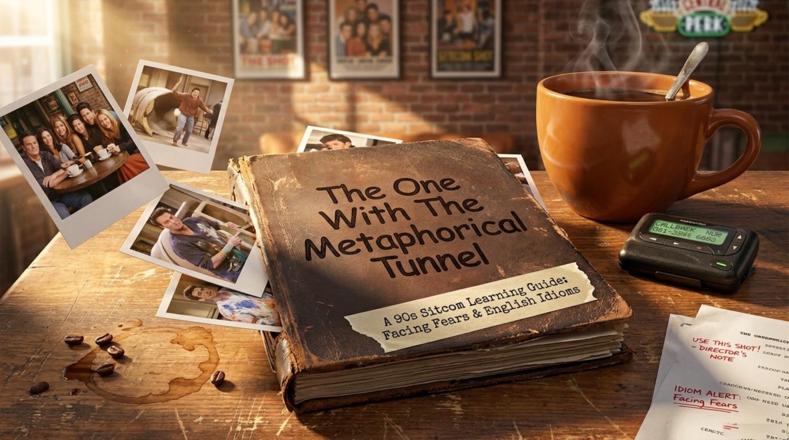
📺 Content and Context: Three Characters, Three Fears
The episode belongs to the third season of Friends, and the guide opens it like a case file. A corkboard titled “Three Characters. Three Fears.” pins three Polaroids side by side: Chandler’s Fear of Commitment, Joey’s Fear of Rejection, and Ross’s Fear of Gender Norms. A marker note in the corner states the theme in red ink: “Theme: Insecurities. How we act when we are afraid of what others think.” That single sentence turns a sitcom rerun into a psychology seminar, and it also turns the episode into a language lesson, because every fear on the board comes with its own vocabulary of avoidance.
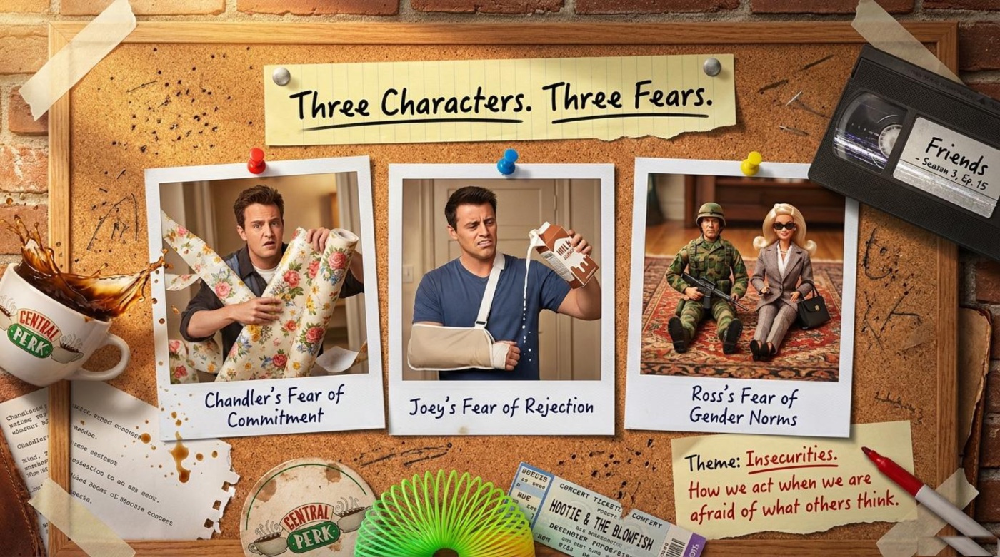
🫠 Chandler: A Drawer, a Bag of Barley, and a Very Long Tunnel
Chandler’s storyline gives the episode both its title and its central metaphor. He takes a casual step toward Janice — the kind of step adults take when a relationship starts to feel serious — and she immediately says yes. The guide illustrates what happens inside him with a hand-drawn road: a little car leaves a sign that reads “Single & Safe” and heads toward a banner that reads “Commitment & Moving In”, and the road between them passes through a dark, scribbled passage labeled “The Panic Zone.” The definition written beside the drawing is the heart of the lesson: “Metaphorical (adjective): Not literal; a symbol used to explain an idea.” Three sticky notes turn the picture into a three-step map of anxiety: “Step 1: You feel trapped and scared (The Tunnel).” — “Step 2: You want to run away.” — “Step 3: You force yourself through the darkness to reach the light (Commitment).”
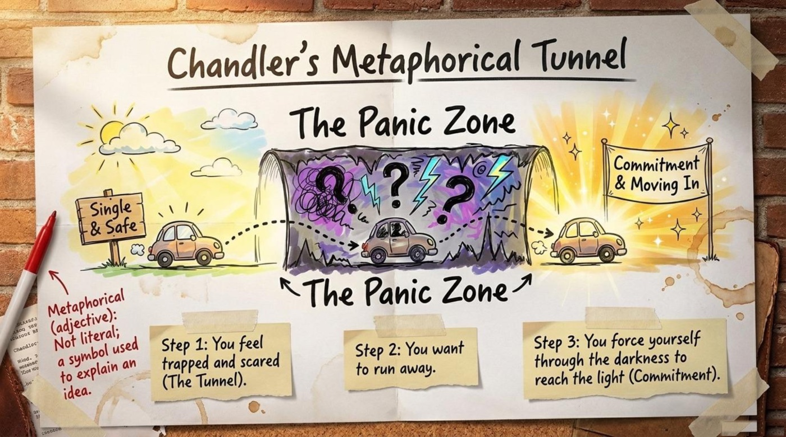
The episode then dramatizes the map with the season’s funniest spy scene. The guide dedicates a whole board to “The Fake Chelsea Party” and breaks it into three acts: “The Plan: Pretend to be aloof by accidentally bumping into Janice.” — “The Execution: Chandler claims he is buying barley for a sophisticated party in Chelsea.” — “The Result: Janice sees through the lie. Chandler throws the barley and runs away.” A crumpled bag of barley becomes the symbol of every badly planned excuse, and the moment of being caught is so painful that the guide attaches a game-show idiom to it: “Buy a vowel (idiom): Originally from a game show; used when you are completely speechless and don’t know what to say.” Notice the structure of Chandler’s failure, because it is a pattern English speakers describe constantly: he panics, he overcorrects, and he makes everything worse.
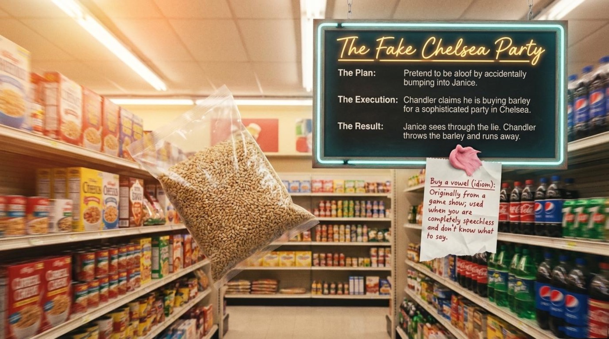
The guide measures Chandler’s behavior on a metal panel called “The Damage Control Spectrum.” The slider runs from an icy blue end to a fiery red end, and the two extremes are defined with a dry sense of humor: “Aloof — Acting cool, distant, not caring” on the cold side, and “A Doof (Clingy) — Buying your girlfriend a dresser drawer and demanding a trip with her parents” on the hot side. Between them sits “Needy — Asking for too much attention.” The price list attached to the slider is the best mnemonic device in the whole guide: the aloof end “(Requires Low-Fat Soy Ice Cream for minor heartbreak)” and the doof end “(Requires Full-Fat Ice Cream for terminal heartbreak).” The definition written underneath in red marker completes the picture: “Damage Control (noun): Actions taken to fix a big mistake you just made.”
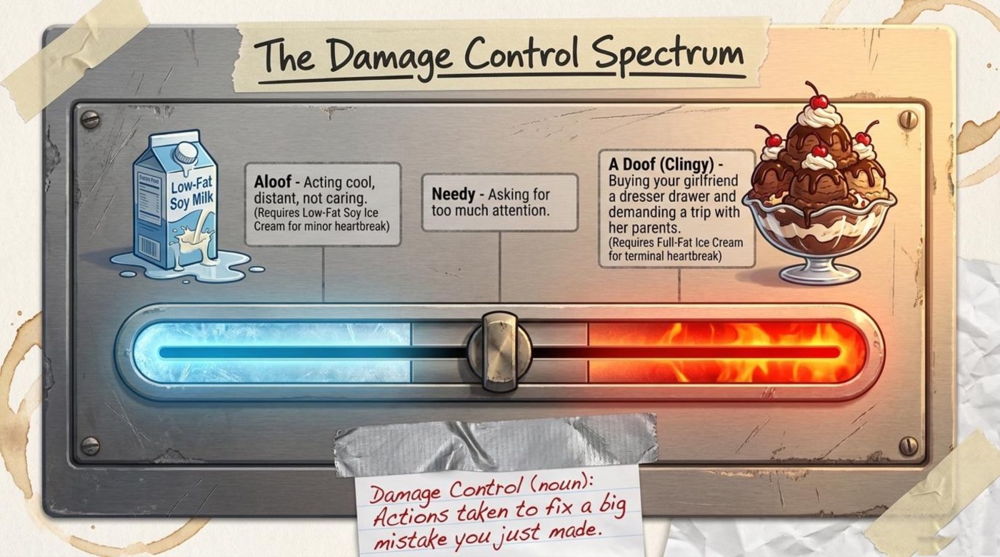
💡 Practical takeaway. English speakers love scale language — aloof, needy, clingy, a doof — because it lets them describe emotional behavior with precision and humor at the same time. Telling a friend “You are being a little clingy” carries more information than a whole speech about attention, and it sounds natural in a way textbook adjectives rarely do. Pay attention also to the medical joke hidden in the spectrum: a terminal case is, literally, an illness that cannot be cured, and here it is applied to a heartbreak that requires full-fat ice cream. Humor does heavy lifting in this kind of vocabulary, and recognizing the joke is half of understanding the word.
🎬 Joey: The Agent Who Told the Truth
The second storyline turns the camera toward the business of acting, and the guide turns the business into a diagram. A corkboard titled “How Hollywood Works” connects four boxes with red string and an ancient telephone: “Box 1: The Actor (Joey)”, “Box 2: The Agent (Estelle, then Phoebe)”, “Box 3: The Casting Director (Annie)”, and “Box 4: The Audition (The Job Interview).” A handwritten note at the bottom summarizes the plot twist: “Phoebe impersonates an agent to save Joey’s missed audition, proving surprisingly effective on her clunky retro car phone.” The board also drops a piece of genuine industry vocabulary into the red-string web, quoted verbatim below. It should be noted that this is exactly the kind of specialized vocabulary that never appears in textbooks but appears constantly in workplace small talk.
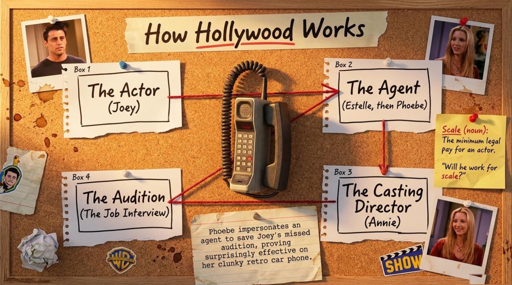
The comedy sharpens when Phoebe decides to be an honest agent, and the guide titles that board “The Truth Hurts.” She reads the casting directors’ real comments from a clipboard stamped REJECTED, one red stamp per verdict: “Not believable as a human being.” — “Pretty, but dumb.” — “The worst Italian accent.” Along the way the guide pauses to explain a piece of television culture: “Flinging-Flanging (slang): A made-up curse word Joey uses on TV to avoid real swearing.” The punchline arrives on a classroom blackboard titled “What Agents Say vs What It Actually Means”, where the polite code “They went another way.” is translated, brutally, as “You are pretty but dumb.” The chalk conclusion below the board is a small masterpiece of character study: “Joey decides he prefers a lying agent over a truthful one because rejection is too painful to take personally.” The note pinned next to it completes the idea: “Take it personally (phrase): To be offended because you think a criticism is about your core character, not just your work.”
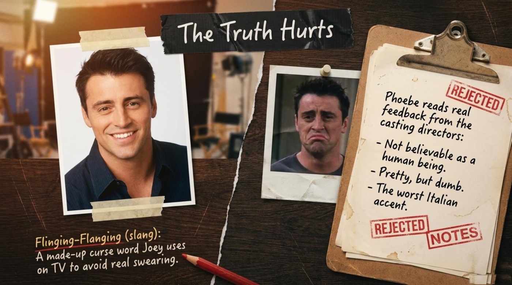
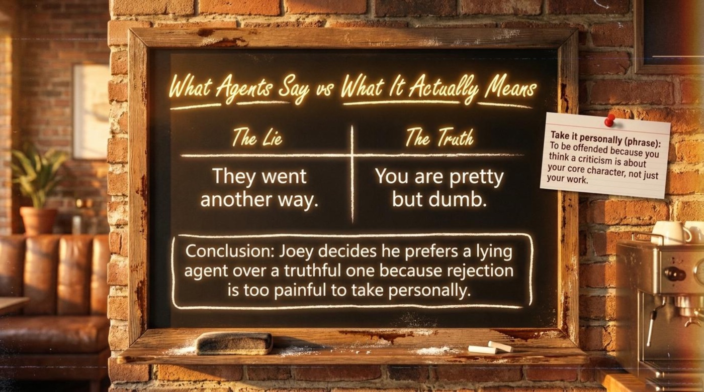
🎓 The guide’s chalk conclusion doubles as a commentary on the whole storyline: “Joey decides he prefers a lying agent over a truthful one because rejection is too painful to take personally.” The boards suggest that soft language is a social technology — “they went another way” protects the listener, while “you are pretty but dumb” protects the truth — and fluent listeners learn to hear both.
🧸 Ross: The Barbie in the Toy Box
The third storyline is the gentlest and the most socially sharp one. Ross discovers that his toddler son Ben is devoted to a Barbie doll, and the guide states the conflict on a cardboard sign under the title “The Toy Box Battle”: “Ross is uncomfortable that his son carries a doll everywhere like a security blanket.” — “He tries to force masculine toys like an action figure and a monster truck, but his son refuses.” Two definitions sit in the corner of the board: “Security blanket (noun): An object a child carries everywhere to feel safe and calm.” and “Weenie (slang): A weak or cowardly person.” The second word is the insult Ross is afraid the playground will apply to his son, and the fear, as the guide slowly reveals, says far more about Ross than about Ben.
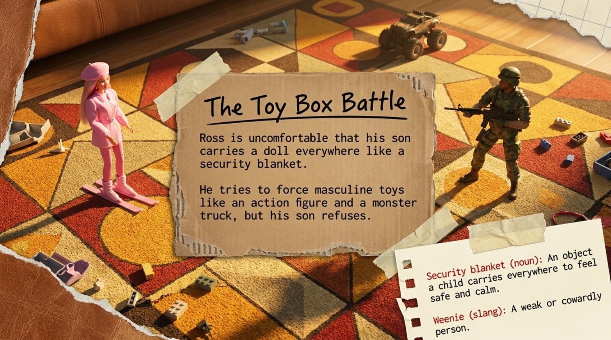
The resolution arrives through Monica, and it is the best-kept secret of the season. The guide presents the reveal on a board styled like a worn television screen: “Monica reveals a secret: Ross used to dress up in his mother’s clothes and host tea parties under the alter-ego Bea.” Next to a photograph of a small child in a sun hat, the guide prints the childhood song that Ross and the whole gang end up belting out in the final scene: “I am Bea, I drink tea, won’t you dance around with me?” The definition pinned to the corner carries the thematic weight of the entire storyline: “Double Standard (noun): A rule that is unfairly applied in different ways to different people (Ross judges his son for doing exactly what Ross did as a child).” The laughter in this scene never lands on Ben; it lands on Ross’s perfectly preserved childhood photographs, and that choice is what keeps the episode warm instead of cruel.
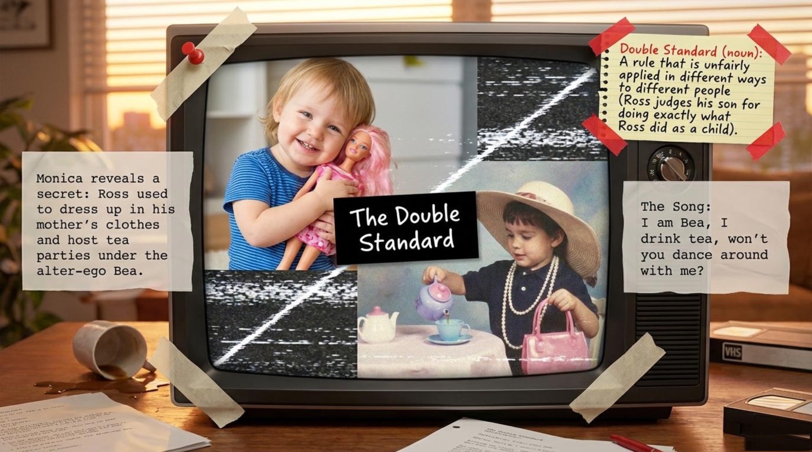
🧾 The Verdict: A Comparison Matrix with a Red Circle
The guide closes the case by gathering all three storylines onto a yellow legal pad titled “Fear vs. Reality Comparison Matrix.” The matrix lists each man’s fear and his action next to the reality he was running from. Chandler “Bought a drawer, panicked, pushed too hard” while the reality column reads “She loved him back when he was honest.” Joey “Switched back to a lying agent” because “Ignorance is bliss in show business.” Ross “Forced military toys onto his son” while the truth was “Ross was projecting his own hidden childhood behavior (Bea).” The synthesis, circled in red marker in the left margin, is the thesis statement of the whole episode and the sentence every learner should carry home: “All three men created their own panic by running from the truth.”
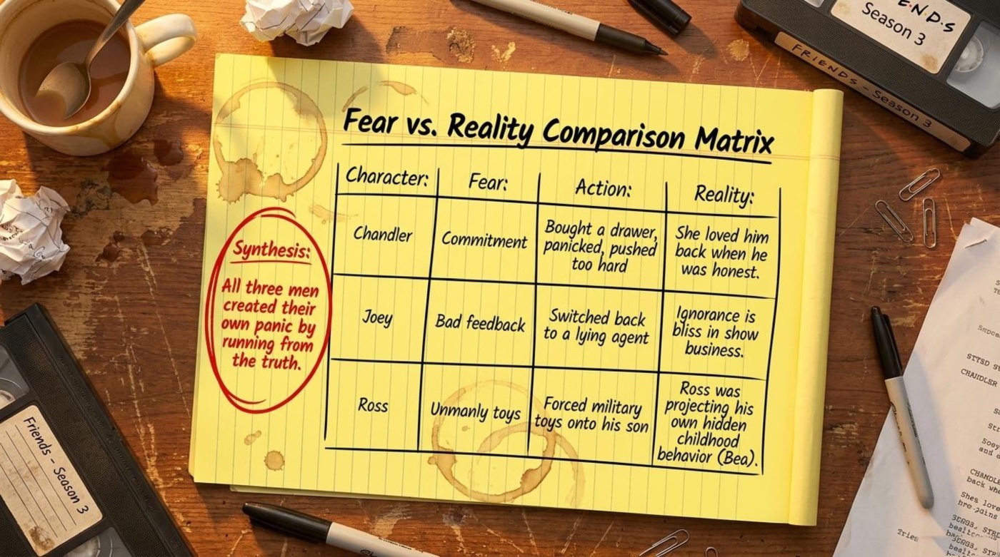
💡 For language learners, the episode is a triple gift. It demonstrates three registers of English in one sitting: the language of relationships (commitment, moving in, playing hard-to-get), the language of work (an agent, a casting director, an audition, working for scale), and the language of family and childhood (a security blanket, tea parties, a double standard). Reading the boards before watching the episode is more efficient than watching with subtitles alone, because the guide names the patterns that the dialogue only implies. Remember that the goal is recognition first and production second: understand the words in the scene this week, and reuse them in your own stories next week.
💬 Vocabulary and Language Takeaways
The language of this episode is the language of emotional emergencies, and the guide collects it with the seriousness of a dictionary and the tone of a comedy writer. One board, titled “90s Sitcom Slang Translation Guide,” serves as the official decoder ring, and it is quoted in full below. ⚠️ A quick register warning belongs here before the list: expressions like a doof, weenie, and flinging-flanging are jokes between friends, and they will sound rude anywhere else. Part of real fluency is knowing where a word is allowed to live.
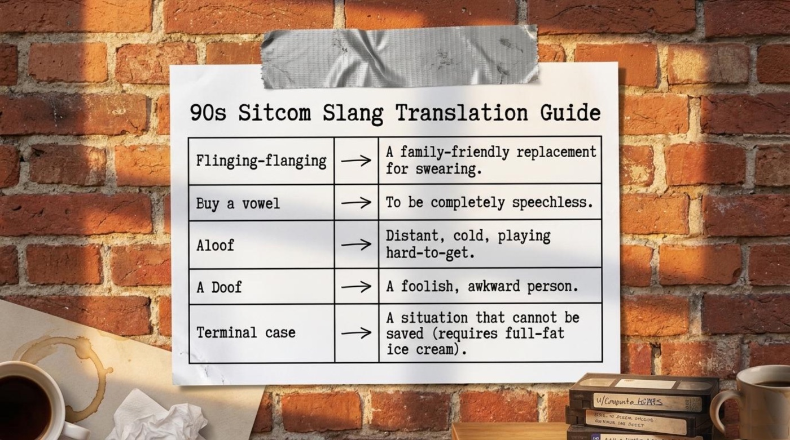
The translation board works through five entries, quoted exactly: “Flinging-flanging → A family-friendly replacement for swearing.” — “Buy a vowel → To be completely speechless.” — “Aloof → Distant, cold, playing hard-to-get.” — “A Doof → A foolish, awkward person.” — “Terminal case → A situation that cannot be saved (requires full-fat ice cream).” Interestingly, the board treats a made-up curse word, a game-show idiom, two personality adjectives, and a medical metaphor as members of the same family, because in conversation they all do the same job: they let speakers talk about feelings quickly, humorously, and safely.
The six cards below hold the core of the lesson. Flip each card to test yourself before reading the definitions — the front shows the term and a teaser, the back holds the meanings, the example from the material, and a note on why the word is worth stealing for your own conversations.
📖 The Full Glossary, Term by Term
The glossary below expands the boards into fourteen entries, and each entry follows the same shape: the literal meaning, the contextual meaning, the example from the material, and the guide’s own explanation. The vocabulary circles one theme — the funny, desperate things people do when they are afraid of being seen honestly — so learning the words as one family is easier than learning them one by one.
📌 metaphoricaladjective
- Literal meaning: based on a metaphor; symbolic rather than physical.
- Figurative / contextual meaning: describes emotions as if they were places or objects — a tunnel, a wall, a light at the end of it.
- From the material: the episode’s title itself, The One with the Metaphorical Tunnel, names Chandler’s journey from the safety of single life to the commitment of moving in.
- How the guide explains it: “Metaphorical (adjective): Not literal; a symbol used to explain an idea.” The definition is short enough to memorize on the spot, and the little road drawing does the rest.
📌 damage controlnoun
- Literal meaning: the actions taken to limit the harm caused by an accident or a mistake.
- Figurative / contextual meaning: the social repairs — apologies, excuses, diversions — that follow an embarrassment in a relationship or at work.
- From the material: Chandler’s fake shopping trip is damage control for the panic Janice witnessed, and it collapses the moment she sees through it.
- How the guide explains it: “Damage Control (noun): Actions taken to fix a big mistake you just made.” The phrase is standard workplace English as well, which makes it double value for learners.
📌 aloofadjective
- Literal meaning: physically or emotionally at a distance.
- Figurative / contextual meaning: acting cool and uninvolved on purpose, often to protect yourself or to look confident.
- From the material: the plan states it plainly — “Pretend to be aloof by accidentally bumping into Janice.”
- How the guide explains it: the spectrum defines it as “Acting cool, distant, not caring,” and the translation guide adds “Distant, cold, playing hard-to-get.” Two boards, one word, and a whole personality type in five letters.
📌 needyadjective
- Literal meaning: requiring help or support.
- Figurative / contextual meaning: demanding more attention, affection, or reassurance than the other person is willing to give.
- From the material: needy sits in the middle of the damage control spectrum, between the icy aloof end and the fiery doof end.
- How the guide explains it: “Needy — Asking for too much attention.” Four words, and the emotional economy of every relationship debate ever held.
📌 a doofnoun · slang
- Literal meaning: none — the word is pure slang, a shortened cousin of doofus.
- Figurative / contextual meaning: a foolish, awkward person; on this board, someone hopelessly clingy in love.
- From the material: the hot end of the spectrum — “A Doof (Clingy) — Buying your girlfriend a dresser drawer and demanding a trip with her parents.”
- How the guide explains it: the translation guide keeps it symmetrical: “A Doof → A foolish, awkward person.” The dresser-drawer example is what makes the definition stick.
📌 buy a vowelidiom
- Literal meaning: on American game shows such as Wheel of Fortune, contestants pay to reveal a vowel in a hidden phrase.
- Figurative / contextual meaning: to be completely speechless — frozen, with absolutely nothing to say.
- From the material: the guide pins the idiom to the supermarket scene, at the exact moment Chandler is caught mid-lie.
- How the guide explains it: “Buy a vowel (idiom): Originally from a game show; used when you are completely speechless and don’t know what to say.” The origin story is part of the fun, and knowing it makes the phrase impossible to forget.
📌 flinging-flangingslang
- Literal meaning: nothing at all — the word is invented.
- Figurative / contextual meaning: a family-friendly substitute for swearing, usable on network television and in front of children.
- From the material: it belongs to Joey, who says it on screen instead of a real curse word.
- How the guide explains it: “Flinging-Flanging (slang): A made-up curse word Joey uses on TV to avoid real swearing.” English keeps a whole shelf of such words — frigging, darn, shoot — and this one is a gloriously absurd specimen.
📌 work for scalephrase
- Literal meaning: to accept the minimum legal salary defined by the actors’ union.
- Figurative / contextual meaning: to take any pay just to keep working — by extension, working for experience rather than money.
- From the material: the Hollywood board pairs the definition with the classic casting-office line about whether a given actor will work for scale.
- How the guide explains it: “Scale (noun): The minimum legal pay for an actor.” It is a two-word passport into real conversations about any creative industry.
📌 take it personallyphrase
- Literal meaning: to receive a remark as if it were aimed at you as a person.
- Figurative / contextual meaning: to treat criticism as a judgment of who you are rather than of what you did.
- From the material: the blackboard conclusion — “Joey decides he prefers a lying agent over a truthful one because rejection is too painful to take personally.”
- How the guide explains it: “Take it personally (phrase): To be offended because you think a criticism is about your core character, not just your work.” In real offices the phrase usually appears in the negative — “Don’t take it personally” — which is exactly how Joey fails to use it.
📌 security blanketnoun
- Literal meaning: a blanket that a child keeps close for comfort.
- Figurative / contextual meaning: any object, habit, or even person that provides a feeling of safety.
- From the material: Ben carries his Barbie “everywhere like a security blanket,” to Ross’s visible discomfort.
- How the guide explains it: “Security blanket (noun): An object a child carries everywhere to feel safe and calm.” Pay attention to how the phrase generalizes: adults have security blankets too — routines, phones, favorite mugs.
📌 weenieslang
- Literal meaning: a sausage or hot dog — the word borrows its silliness from the shape.
- Figurative / contextual meaning: a weak or cowardly person; a mild playground insult.
- From the material: it is the word Ross fears other kids will aim at his son if the doll comes along.
- How the guide explains it: “Weenie (slang): A weak or cowardly person.” The register warning applies twice over: funny among friends, insulting to a stranger, and absurd in an email.
📌 double standardnoun
- Literal meaning: two standards — one for judging yourself, another for judging everyone else.
- Figurative / contextual meaning: any unfair rule applied differently to different people; a staple of ethical and political debate.
- From the material: Ross panics about Ben’s doll while his own tea-party history waits patiently in the family photo album.
- How the guide explains it: “Double Standard (noun): A rule that is unfairly applied in different ways to different people (Ross judges his son for doing exactly what Ross did as a child).” The parenthetical example is what turns a dictionary entry into a punchline.
📌 terminal casenoun phrase · humorous
- Literal meaning: a medical patient whose illness cannot be cured.
- Figurative / contextual meaning: a hopelessly lost situation, used jokingly; in this guide, a heartbreak beyond repair.
- From the material: the spectrum’s punchline — “Requires Full-Fat Ice Cream for terminal heartbreak.”
- How the guide explains it: “Terminal case → A situation that cannot be saved (requires full-fat ice cream).” The medical metaphor plus the ice cream prescription is the guide’s humor at its sharpest.
📌 alter egonoun
- Literal meaning: from Latin, “other I” — a second self.
- Figurative / contextual meaning: a secret or alternate identity, sometimes playful, sometimes heroic, like a superhero’s mask.
- From the material: “Ross used to dress up in his mother’s clothes and host tea parties under the alter-ego Bea.”
- How the guide explains it: the board uses the term naturally instead of defining it, which is itself a small lesson: advanced words enter casual speech once the context carries them.
Notice how the fourteen items lean on each other. Aloof and needy make sense as opposites; a doof only lands because aloof came first; terminal case completes the ice-cream joke; and double standard waits until Ross’s alter ego is exposed. The guide teaches vocabulary the way the episode teaches character: everything connects, and nothing exists alone.
🎭 Deeper Meaning: The Metaphors Behind the Laughs
A good sitcom teaches without announcing it, and the guide’s boards are built around four symbols that carry more emotional English than most textbooks manage in a chapter. Each symbol takes a feeling that is hard to talk about and gives it a shape, a color, or a song. The four shapes below are the reason this episode keeps returning to English classrooms thirty years after it aired.
🚗 The Tunnel: Fear as Geography
The guide’s drawing turns anxiety into a landscape. A car leaves “Single & Safe”, enters a scribbled passage labeled “The Panic Zone”, and drives out toward a banner reading “Commitment & Moving In.” The definition on the board — “Metaphorical (adjective): Not literal; a symbol used to explain an idea.” — is the theoretical frame, and the three sticky notes are the human one: “Step 1: You feel trapped and scared (The Tunnel). Step 2: You want to run away. Step 3: You force yourself through the darkness to reach the light (Commitment).” The tunnel gives fear a beginning, a middle, and — crucially — an exit. The episode’s title plays on a classic English idiom, and the third sticky note restates it almost word for word. Once a learner sees emotions as places, a whole family of English expressions opens up: go through a rough patch, hit a wall, come out the other side — and the classic the light at the end of the tunnel.
🍨 The Ice-Cream Scale: Measuring Feelings in Dairy Fat
The damage control spectrum is funnier and cleverer than a simple vocabulary list, because it assigns a dosage to every emotion. The cold blue end of the slider prescribes “Low-Fat Soy Ice Cream for minor heartbreak”, and the hot red end demands “Full-Fat Ice Cream for terminal heartbreak.” The two pictured objects — a modest soy milk carton and an extravagant three-scoop sundae — work as an emotional thermometer. The symbol teaches two things at once. First, English speakers grade their feelings with everyday objects, and the object chosen tells the listener exactly how serious the situation is. Second, the same event can require different dosages on different days, which is why the slider sits between the extremes rather than picking one. It should be noted that the humor is the point: a metaphor that makes people smile is a metaphor they remember, and nobody forgets that terminal cases need full-fat ice cream.
🎀 Bea and the Barbie: The Toy Box as a Mirror
The doll on the carpet is never really about the doll. The guide’s television-screen board reveals that Ross spent his own childhood hosting tea parties as Bea, singing “I am Bea, I drink tea, won’t you dance around with me?” in his mother’s clothes. The definitions around the reveal make the symbolism explicit: Ben’s doll is “an object a child carries everywhere to feel safe and calm” — a security blanket in toy form — and Ross’s reaction is “a rule that is unfairly applied in different ways to different people.” The toy box works as a mirror: what we police most fiercely in others is frequently the part of ourselves we buried earliest. The song is the counterweight. It is a symbol of unashamed self-expression, and by the final scene the entire cast sings it together, which is the episode’s whole argument about acceptance delivered in one chorus. The guide quotes the song exactly as the show wrote it, and the quote deserves to stay verbatim, because its rhythm is what makes it singable.
📞 “They Went Another Way”: The Euphemism as Armor
The blackboard contrast is the sharpest symbol in the set. On the left, the professional lie: “They went another way.” On the right, the truth it launders: “You are pretty but dumb.” The pinned definition — “Take it personally (phrase): To be offended because you think a criticism is about your core character, not just your work.” — explains why the euphemism exists, and Joey’s chalk-written conclusion — “Joey decides he prefers a lying agent over a truthful one because rejection is too painful to take personally” — explains why it survives. The telephone on the Hollywood board, wired to every box with red string, completes the symbol: information travels through the industry the way it travels through any workplace, arriving softened, delayed, or tastefully distorted. For learners, the practical value is enormous. Professional English is full of softeners — we went in another direction, we decided to move forward with other candidates — and recognizing the code is a survival skill for interviews, negotiations, and performance reviews alike.
🎓 The guide’s synthesis note, circled in red on the comparison matrix, is the commentary that binds all four symbols together: “All three men created their own panic by running from the truth.” The tunnel, the spectrum, the mirror, and the euphemism are four costumes on the same idea.
🧠 Comprehension Check: Central Perk Trivia
The guide ends its lesson the way a real trivia night ends: with questions on a neon sign and answers on a napkin. The sign is titled “Central Perk Trivia: Comprehension Check” and it mixes formats — true or false, fill in the blank, short answer, and vocabulary. The interactive version below rebuilds that experience with eight questions drawn from the boards in this article. Choose an answer and the quiz reacts instantly, keeps the score, and explains every verdict. The napkin’s own philosophy applies here as well: honest feedback is the fastest route to improvement, and a wrong answer tonight is a correct answer tomorrow.
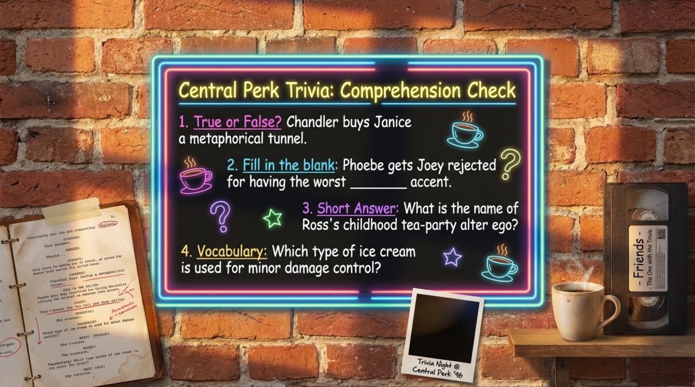
🌅 The Final Takeaway
The napkin where the guide prints its answers also carries the sentence that holds the entire lesson together: “Whether you are going through a metaphorical tunnel, facing a double standard, or just trying to work for scale — honesty is usually the best damage control.” It is a beautifully economical sentence, because it recycles three of the fourteen expressions from this article into a single piece of advice, and it states the thesis of both the episode and the lesson: Chandler, Joey, and Ross each suffered more from hiding the truth than from facing it.
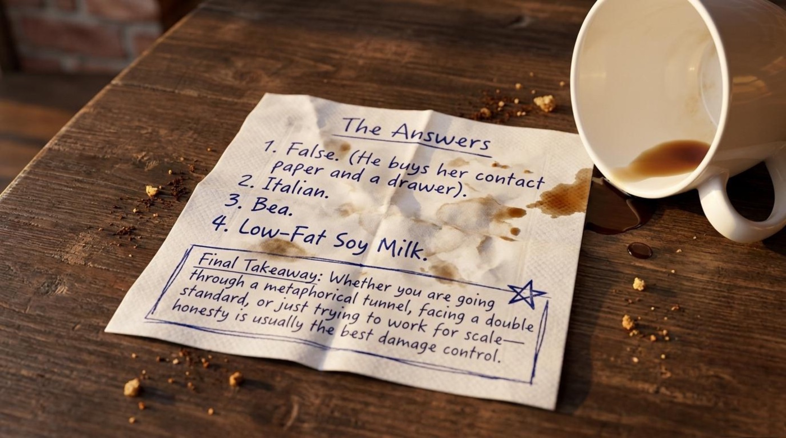
The main takeaway for language learners mirrors the takeaway for the characters. Honest practice beats comfortable practice the way Phoebe’s brutal clipboard beats Estelle’s warm “they went another way”: a correction stings for a moment and then disappears, while a polished illusion keeps reappearing in real conversations. Remember that fluency is built the way Chandler should have built his relationship — by walking through the tunnel instead of inventing a fake party in Chelsea. The guide’s final board says it best, and it applies to grammar, vocabulary, and pronunciation exactly as it applies to commitment.
📚 The call to action is simple. Play the game at the top of this page until the fourteen expressions feel automatic. Flip through the cards again tomorrow, because spaced repetition does the quiet work. Watch the episode one more time — first with subtitles, then without — and listen for damage control, scale, and the song about Bea. Retell the three storylines aloud to a friend, a colleague, or a mirror, and use at least five expressions from the glossary in your retelling. The tunnel is passable, the napkin is optimistic, and the English, unlike Chandler’s barley, is yours to keep.